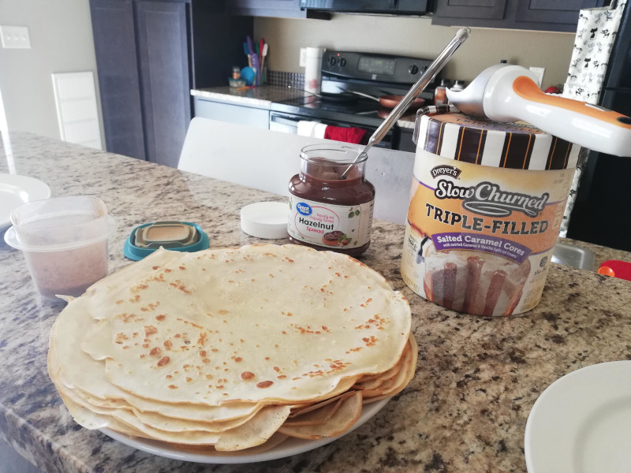

Egg-free Pancakes

The best egg-free pancakes (crepes)
When we first found out that my husband was allergic to eggs, we were so sad, particularly because making pancakes (or crepes to a large portion of the world's population) had been his
second-favourite food-related activity. Eating them was his favourite! We thought that it was all over, and he would never get to feel that satisfaction again. Until, one day, we stumbled
upon this recipe somewhere on the internet. We don't remember where. But it changed our lives forever!
It is basically a regular crepe recipe, just without eggs. This fact blew our minds, particularly when we realised that we enjoyed these pancakes more than the recipe my husband had been making
for years. And now we want to share it with the world. No more breaking eggs to enjoy pancakes whenever you want. This recipe is so simple, particularly if you have a great crepe pan.
Ingredients:
- 2 cups milk
- 1 cup flour
- 2 tbsp oil
- 1 tbsp sugar
- 1/2 tsp vanilla extract
- 1/2 tsp salt
Steps
- Mix all wet ingredients together thoroughly. (We use our Vitamix Blender on 3+ for 15 seconds.)
- Sift all dry ingredients into the wet mixture and whisk until combined. (We do not sift when using our blender, but be careful to only run it on 3+ for just 15 seconds so as not to over-mix.)
- Heat pancake pan/s on stovetop at a medium heat. (If the heat is too high, pancakes will stick.)
- Lightly coat the surface of the pan in batter, pouring evenly while swishing the pan so that the batter stretches thinly over the surface of the pan. This takes practice!
- Flip pancake using a spatula when the edges start to brown
- Cook the other side for about 20-30 seconds, or until golden brown marks begin to form from the opposite side
- Remove pancake onto a plate, and proceed with remaining batter.
- Serve fresh or less fresh - they're honestly delicious whenever. Top with whatever toppings you can possibly imagine.